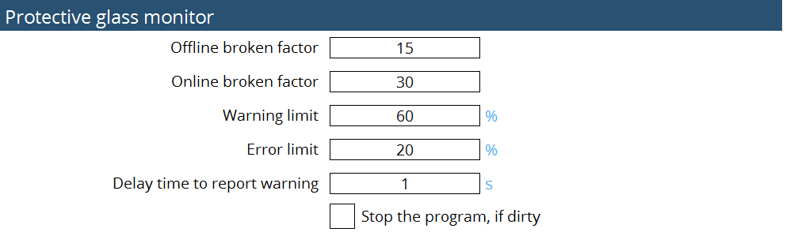

Surveillance du verre de protection
Paramétrage
La surveillance du verre de protection est un système qui surveille l’état du verre de protection. Cela pourrait vous empêcher de produire des pièces de mauvaise qualité ou même d’endommager la machine.
Le comportement est défini comme suit :
-
Lorsque la valeur de qualité du verre de protection est inférieure au niveau d’erreur pendant la découpe : la machine arrête l’usinage, le faisceau s’éteint et une fenêtre apparaît à l’avant de l’IHM.
-
Si vous cliquez sur le bouton Fermer de la fenêtre, la machine continuera à découper la tôle actuelle. Avant de traiter la tôle suivante, une mesure du verre de protection est effectuée. Si la qualité est toujours inférieure au niveau d’erreur, la fenêtre apparaîtra à nouveau. Cliquer sur « Fermer » permettra à la machine de continuer le traitement et la fenêtre apparaîtra à nouveau à la fin de l’usinage de la tôle.
-
Si le verre est contaminé dès le début, après avoir coupé le premier contour, la machine s’arrête et effectue une mesure du verre de protection. Si la qualité est inférieure au niveau d’erreur, une fenêtre apparaîtra. Cliquer sur le bouton Fermer permet à la machine de continuer à couper la tôle actuelle.
Une mesure autonome et une mesure en ligne sont possibles :
| Mesure autonome | Surveillance en ligne | |
|---|---|---|
Type de mesure |
Conditions de mesure fixes |
Mesure in situ |
Déclencheurs |
Limite relative à la valeur de référence propre |
Limite relative à la valeur de référence propre |
Effet |
Résultat en pourcentage |
Réaction à la fin du contour |
Objectif |
Empêche la production de chutes de matière |
Déclenche la mesure autonome |
Mesure autonome : la mesure autonome est utilisée pour vérifier la qualité du verre dans des conditions stables. Pendant la mesure autonome, trois niveaux de puissance laser différents sont émis, chacun pour une période spécifique — généralement 500 ms. La lumière réfléchie par le verre est mesurée à chaque niveau de puissance, et la luminosité de réflexion normalisée est calculée et comparée à une valeur de référence, qui est obtenue en utilisant la même méthode. Un facteur de rupture hors ligne est également impliqué dans ce calcul pour déterminer la qualité du verre. Pour la même valeur de luminosité de réflexion, un facteur de rupture plus élevé indique un verre de meilleure qualité. Par conséquent, ce n’est que lorsque le verre est considérablement sale qu’un avertissement ou une erreur est déclenché.
Surveillance en ligne : la mesure en ligne est utilisée pour vérifier la qualité du verre pendant la coupe. Chaque fois qu’il y a une sortie laser, la valeur moyenne de la lumière réfléchie sur une période est calculée, et un filtre passe-bas est appliqué à cette valeur. Le facteur de rupture en ligne est ensuite pris en compte pour déterminer la qualité finale du verre. En raison de la nature instable de la sortie laser et de la rétroréflexion de la tôle, le facteur de rupture en ligne est significativement plus élevé que celui hors ligne.
Le paramétrage se fait dans la page de Réglages :

Mesure de la luminosité
La mesure de la fenêtre de protection est basée sur une mesure de la luminosité. Si l’état est propre, l’état de la fenêtre de protection est correct pour procéder à la coupe en termes de bons résultats de coupe. Si l’état est contaminé, l’état de la fenêtre de protection est médiocre et il est conseillé de la remplacer pour obtenir de bons résultats de coupe.

Selon le résultat du pourcentage de valeur de qualité, nettoyez ou remplacez le verre de protection.
-
80 %-90 % → propre
-
< 80 % → remplacer

Avec les entrées ci-dessus, les axes X et Y se déplacent vers la valeur positionnée.

L’exécution du programme suivra les données de fréquence et de service conformément aux exigences de l’utilisateur. Le paramètre de puissance est prédéfini comme une augmentation de 500 W, 1000 W et 1500 W.
Le diamètre focal, la distance de point focal et la temporisation ont également été modifiés selon les exigences de l’utilisateur. Les valeurs saisies peuvent être surveillées lorsque le programme s’exécute. La temporisation spécifiée maintiendra le programme jusqu’à la fin de la temporisation configurée, puis le programme est annulé.
Le mode de mesure comporte des données hors ligne et de référence. Dans la sélection hors ligne, l’utilisateur peut exécuter le programme et vérifier l’état de la fenêtre de protection. Dans la sélection de référence, l’utilisateur peut vérifier de manière croisée les données et les valeurs de qualité et de linéarité et il peut les enregistrer à l’aide de l’option d’enregistrement. Généralement, la sélection de référence sera choisie lorsque la fenêtre de protection est plus récente, ce qui donne un ensemble précis de résultats.
Lorsque le programme de mesure lumi s’exécute, il prend le journal des données et il peut être lu dans LumiMeasurelog.txt à partir du chemin C:\ProgramData\Metamation{APPNAME}\Log\Année\Mois\Jour ou dans l’interface utilisateur.


En référence au calcul ci-dessus, les paramètres suivants seront ajoutés dans le fichier MK pour optimiser la fonction de surveillance :
-
Facteur de rupture hors ligne
-
Facteur de rupture en ligne
-
Seuil d’avertissement en pourcentage
-
Limite d’erreur en pourcentage
-
Temporisation en secondes pour signaler l’avertissement
